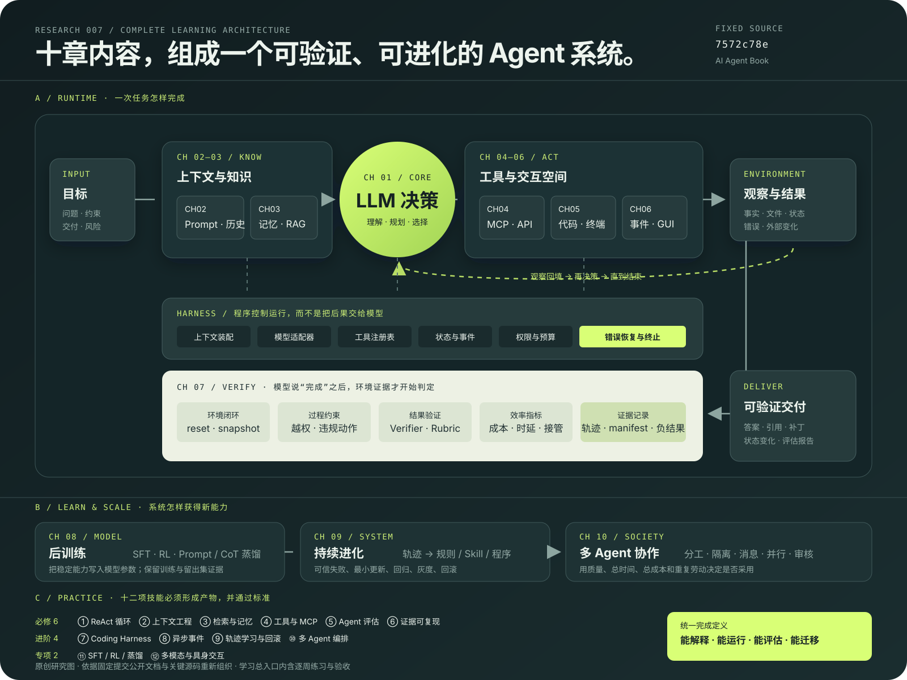

理解系统
正文从上下文、记忆、工具讲到评估、训练和多 Agent，建立完整的工程地图。
AI AGENT / ENGINEERING ATLAS
这是一套 Agent 工程教材、参考实现和实验档案。它解释模型如何获得上下文、调用工具、观察结果，并通过验证把一次生成变成可检查的行动。
固定研究版本 · 7572c78e · 2026-09-07
10章节，从基础到协作
109配套实验与复现轨道
15语言入口
研究判断仓库的价值在方法与证据，
不是一键获得所有能力。
01 / WHAT IT IS
正文从上下文、记忆、工具讲到评估、训练和多 Agent，建立完整的工程地图。
配套代码把工具调用、混合检索、异步控制和协作循环变成可以追踪的实现。
台账、轨迹、manifest 和失败样本区分“代码存在”“实际运行”和“实验成立”。
本页研究边界 已核对固定版本文档与关键源码；没有安装全部上游依赖、调用模型 API 或重跑 109 个实验。实验数据按上游证据边界转述。
02 / COMPLETE ARCHITECTURE
从目标进入系统开始，沿上下文、模型、工具、环境和验证闭环，再进入后训练、持续进化与多 Agent；底部把十二项练习映射到对应层。

消息历史 → 模型选择 → 工具调用 → 观察回填 → 终止。
练：ReAct 搜索与轨迹解释Prompt、缓存、压缩、记忆、混合检索、RAG 与结构化索引。
练：三种上下文 + 三种检索对照MCP、API、代码、终端、异步事件、语音、GUI 与设备。
练：安全工具 + 读改测 + 中断恢复环境重置、过程约束、Verifier、成本时延、轨迹与负结果。
练：20 题固定评估集SFT、RL、蒸馏，以及从可信失败到规则、Skill 和程序更新。
练：前后对照 + 三类回归集分工、上下文隔离、消息协议、并行 worker、冲突处理与审核。
练：单 / 多 Agent 双臂比较03 / CAPABILITY COMPOSER
Agent 很少靠单一模块完成工作。点选任务，观察能力组合、交付结果和最需要控制的风险。
模型先拆解研究问题，搜索最新资料，读取固定版本源码；必要时运行小实验，最终把每个结论绑定到直接证据。
对应章节：1 基础 · 4 工具 · 5 Coding Agent · 7 评估
04 / HOW IT WORKS
点击“下一步”，观察职责如何在模型、程序、环境和验证器之间移动。这里展示的是教学状态机，不会调用真实模型或工具。
PROGRAM · 输入准备
程序读取用户目标、必要历史、检索资料和工具描述。上下文决定模型这一轮能看到什么，也决定它可能采取哪些动作。
goal 分析 ai-agent-book 的能力 context 固定提交 + README + 章节索引 tools web_search, read_source, run_check
05 / TEN CHAPTERS, ONE SYSTEM
前六章扩大 Agent 能看到和能做到的范围，后三章负责评价、学习和协作。
最小循环与 Harness
Prompt、缓存、Skills
Memory、RAG、索引
MCP、感知与执行
代码创造新工具
异步、语音、GUI、机器人
环境、指标与统计
SFT、RL 与蒸馏
轨迹、回归与回滚
分工、隔离与审核
能力摘要：建立“模型 + 上下文 + 工具”的最小循环，理解 Harness 为什么决定实际表现。
能力摘要：组织 Prompt、历史、工具描述和 Skills，并用 KV Cache 与压缩控制长任务成本。
能力摘要：用用户记忆、混合检索、RAG、树和知识图谱接入模型参数之外的事实。
能力摘要：通过工具 schema 和 MCP 扩大感知、执行与协作范围，并管理发现、权限和结果校验。
能力摘要：让 Agent 读、搜、改、测和修复，并把代码、SQL、表单、演示稿等作为可验证制品。
能力摘要：从请求响应扩展到异步事件、语音、GUI 和机器人，处理连续观察与可中断动作。
能力摘要：建立 reset、run、snapshot、verifier、record 闭环，比较完成率、成本和过程违规。
能力摘要：理解数据构造、SFT、RL 与蒸馏，判断何时应把能力从上下文写入模型参数。
能力摘要：从可信轨迹生成规则或程序更新，并通过回归、灰度和回滚控制能力变化。
能力摘要：用任务分解、上下文隔离、消息协议、并行 worker 和独立审核组织群体工作。
06 / SKILLS TO LEARN
先掌握每个 Agent 都需要的基本能力，再学习复杂工程；训练、多模态和机器人放在有明确需求时深入。
读懂消息历史、工具调用、观察回填和终止条件。
选择、排列和压缩规则、历史、资料与工具描述。
区分事实日志、可变记忆和检索索引，组合多路召回。
定义清晰 schema、错误返回、权限边界和结果验证。
把完成率、过程违规、成本、时延和人工接管变成指标。
固定版本，保存输入、轨迹、输出、环境和负结果。
组织仓库检索、补丁、测试、失败修复与工作区隔离。
处理长任务、并发工具、中断、取消确认和恢复。
从坏案例提炼最小规则，在发布前检查回归。
设计分工、隔离、消息信封、并发和独立审核。
理解数据、奖励、工具 token、留出集和样本效率。
处理语音、视觉、Computer Use 和机器人动作空间。
07 / LEARNING ROUTE
每一阶段都以“能解释、能运行、能评估、能迁移”为验收，不要求第一遍读完所有适配器和外部框架。
适合希望建立完整 Agent 工程能力，并把所学迁移到自己项目的人。每周只选择少量代表实验，先完成证据闭环。
继续：完整课程与验收 ↓第 1–2 章：Agent、Harness、上下文与压缩
第 3 章：记忆、混合检索、RAG 与索引
第 4–5 章：工具、MCP 与 Coding Harness
第 6–7 章：异步、GUI、环境和 Verifier
第 8–9 章：后训练、轨迹学习、回归与回滚
第 10 章：单 / 多 Agent 对照，迁移到现有项目
WEB STUDY DESK
先选路线，再按周打开任务。每周只在“产物存在、标准通过”后打勾；勾选进度仅保存在当前浏览器。
Python 3.11–3.13、uv 与至少一个可调用模型。涉及浏览器、CUDA、FFmpeg 或模拟器的实验按需安装。
本页基于 7572c78e。记录提交、依赖、模型、参数和数据，避免代码变化后无法复查。
先运行 CPU 友好、凭据较少的实验；训练、多模态和具身实验放到理解评估方法之后。
0 / 6 周完成
实验： 日期 / 上游提交： 问题与假设： 基线 / 改动： 环境、模型、数据、参数： 运行命令与轨迹位置： 结果（质量 / 成本 / 时延）： 失败与负结果： 结论边界： 下一步：
在相同资料、模型和预算下，比较文件检索、混合 RAG、Agentic RAG。先准备 20–30 个带标准答案、来源和不可接受错误的问题。
完成定义：三种方案使用同一问答集；保存完整轨迹和负结果；报告均值与失败类型；只在差异可重复时给出采用建议。
Web 是学习总入口。需要离线留档时，可查看 Markdown 版本 ↗。
08 / EVIDENCE BEFORE HYPE
这恰恰是仓库最有用的品质：负结果仍是结果，外部条件不足仍标为未完成。
两组任务准确率相同；主动发现减少了工具描述文本和耗时，但没有证明准确率提升。
第 4 章证据 ↗固定 K&K 数据集实验中，代码路线低于纯思考路线；拥有工具不等于模型会正确使用。
第 5 章证据 ↗Prompt 蒸馏获得明显提升，CoT 蒸馏的提升未显著。训练方法必须在自己的任务上评估。
第 8 章证据 ↗09 / WHERE IT FITS
搜索资料、读取文档、引用来源、管理长期记忆。
交付：可追溯答案修改代码、运行检查、制作演示稿、处理媒体。
交付：文件与验证记录调用 API、填写表单、操作桌面、响应异步事件。
交付：环境中的状态变化多个角色并行研究、隔离信息、汇总与独立审核。
交付：经审核的综合结果简单问答通常不需要完整 Agent 架构。任务包含多步决策、外部事实、真实操作或验收要求时，这套方法更有意义。
10 / MEANING FOR OUR LAB
先把现有项目变成评估环境，再决定是否引入更复杂的 Agent 结构。
比较文件检索、混合 RAG 和 Agentic RAG；测答案准确率、引用准确率、成本与时延。
用相同研究任务比较单 Agent 与多 Agent，记录总时间、重复劳动、返工和最终质量。
验证长期记忆和事件怎样影响角色行为，并把安全动作与剧情选择分层控制。
每题带标准答案、来源和不可接受的错误。
在相同模型、资料和预算下运行。
只有稳定胜出后，才进入自动优化。
RESEARCH RECORD
本页没有复制上游书稿、代码或配图；页面、能力图和分类均为依据固定版本公开资料制作的原创研究表达。